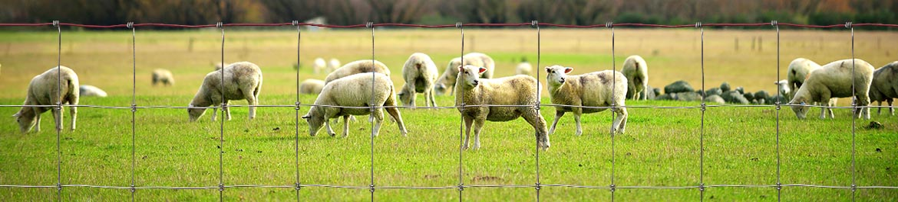
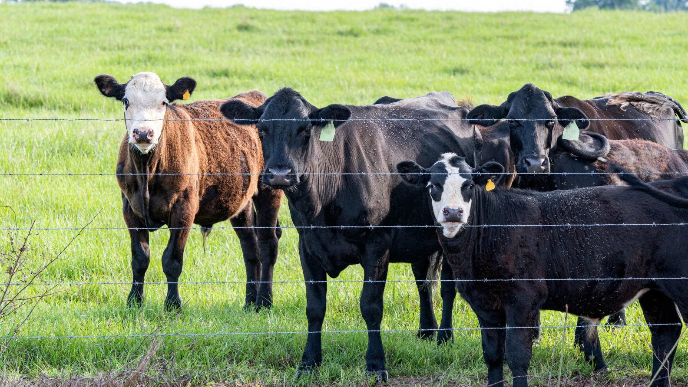
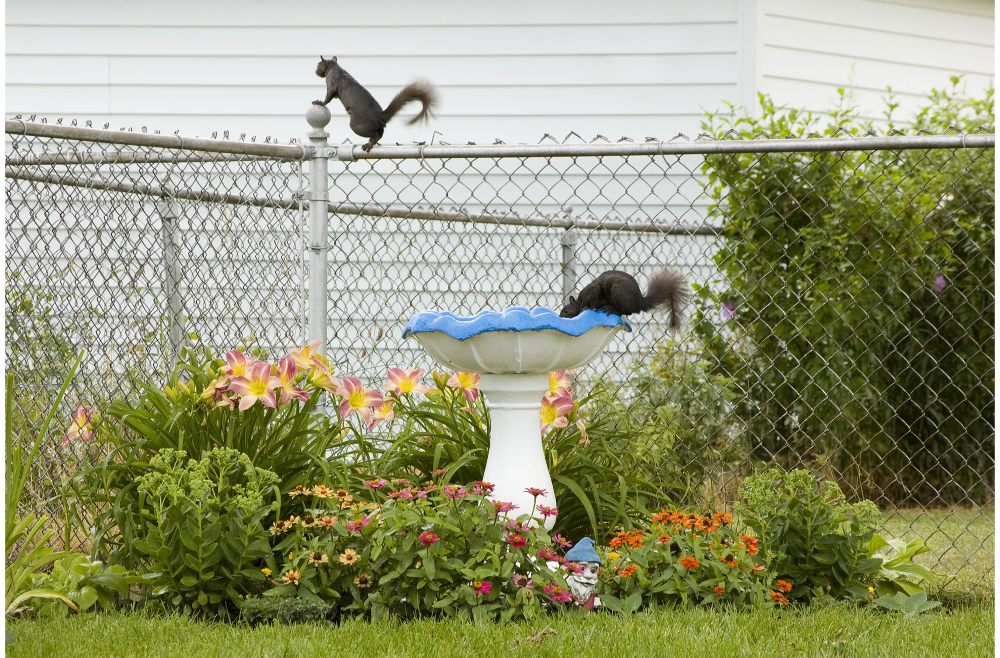

Field Fence Installation: End Posts, Line Posts & Wire Mesh
Step-by-step guide to installing field fencing with proper post spacing, tensioning, and wire mesh attachment for livestock enclosures.
Read MoreFarm fencing, poultry netting, orchard protection, and erosion control solutions engineered for the demanding conditions of modern agriculture and livestock management.
Agricultural operations demand fencing and mesh products that withstand constant exposure to weather, animal contact, and mechanical stress. Kestrel Metal supplies a comprehensive range of farm fencing, poultry netting, orchard protection, and erosion control solutions engineered to perform across seasons. Our hot-dip galvanized and zinc-aluminum coated products deliver extended service life in humid, coastal, and high-rainfall environments where ordinary fencing fails prematurely.
From high-tensile fixed-knot field fencing for cattle pastures to hexagonal wire netting for poultry enclosures and orchard perimeter systems, our products support every stage of modern farm management. Serving farms and agricultural distributors across 30+ countries, we provide custom heights, aperture sizes, and coating specifications to meet the needs of livestock breeders, orchardists, and row-crop operators worldwide.

Specialized wire mesh and fencing products designed for the demanding conditions of modern farming and livestock operations.

High-tensile field fencing for crop protection, livestock boundary control, and property demarcation. Engineered with fixed-knot construction that resists animal impact and prevents sagging over long runs, with galvanized or zinc-aluminum coating for decades of service in exposed rural environments.
View Product
Hexagonal wire netting for poultry enclosures, chicken coops, rabbit cages, and small livestock housing. Lightweight yet durable, with tight mesh apertures that contain birds and small animals while excluding predators. Available in galvanized and PVC-coated finishes for extended outdoor life.
View Product
Fixed-knot and hinge-joint fencing for orchard and vineyard perimeter protection against deer, rabbits, and other wildlife. Provides reliable crop protection without restricting airflow or sunlight, supporting healthy tree and vine growth while deterring animal browsing and bark damage.
View Product
Hinge-joint fencing for horse paddocks, cattle pastures, and rotational grazing systems. Flexible yet strong construction absorbs animal impact without breaking, while smooth knot surfaces protect livestock from injury. Ideal for managed grazing and intensive pasture rotation programs.
View ProductWe understand the unique challenges farmers and livestock operators face — and we engineer solutions to address each one.
Coyotes, foxes, wild dogs, and other predators threaten livestock and poultry, causing significant losses for farm operations.
High-tensile fixed-knot fencing with narrow bottom apertures and reinforced verticals creates an effective predator barrier that resists digging, climbing, and impact from large animals.
Constant exposure to sunlight, rain, humidity, and temperature cycling degrades untreated steel fencing, requiring frequent replacement.
Zinc-aluminum and PVC coating provide superior corrosion and UV resistance, extending fence service life to 30+ years even in coastal, tropical, and high-rainfall agricultural environments.
Sharp wire ends and poorly designed knots can injure valuable livestock, leading to veterinary costs and stressed animals.
Smooth wire surfaces and proper knot designs — including hinge-joint and fixed-knot construction — eliminate sharp protrusions while maintaining fence strength and animal containment.
Farms and ranches require miles of perimeter and internal fencing — making cost-effective, durable solutions critical to profitability.
High-tensile wire with wider post spacing reduces material and labor costs per kilometer while maintaining fence integrity, delivering economical perimeter coverage for large agricultural properties.

Standards-compliant products manufactured to ASTM, BS, and EN specifications for farm fencing and agricultural netting.
Zinc-aluminum coating (Galfan) delivers 2-3 times the corrosion resistance of standard galvanizing in agricultural environments.
High-tensile steel wire with 900-1100 MPa tensile strength resists animal impact and reduces sagging over long fence runs.
Custom heights and lengths tailored to livestock type, predator pressure, and terrain for optimal farm protection.
Bulk supply capacity with container-load shipments for large farms, distributors, and government agricultural programs.
Expert consultation on fence selection, post spacing, and installation practices for your specific livestock and climate.
Our products meet the international standards and certifications relevant to this industry.
Quality management system ensuring consistent fencing and netting product quality.
Standard specification for zinc-coated (galvanized) carbon steel wire for agricultural fencing.
European standards for steel wire and wire products for agricultural fencing applications.
Standard specification for zinc coating (hot-dip) on iron and steel fence products.

Step-by-step guide to installing field fencing with proper post spacing, tensioning, and wire mesh attachment for livestock enclosures.
Read More
Understanding your legal responsibility when livestock escape due to fence failure, and how proper fencing reduces liability risk.
Read More
Key factors in choosing chain link fencing including mesh size, wire gauge, coating type, and height for agricultural applications.
Read MoreContact our engineering team for farm-specific product recommendations, custom specifications, and competitive pricing.